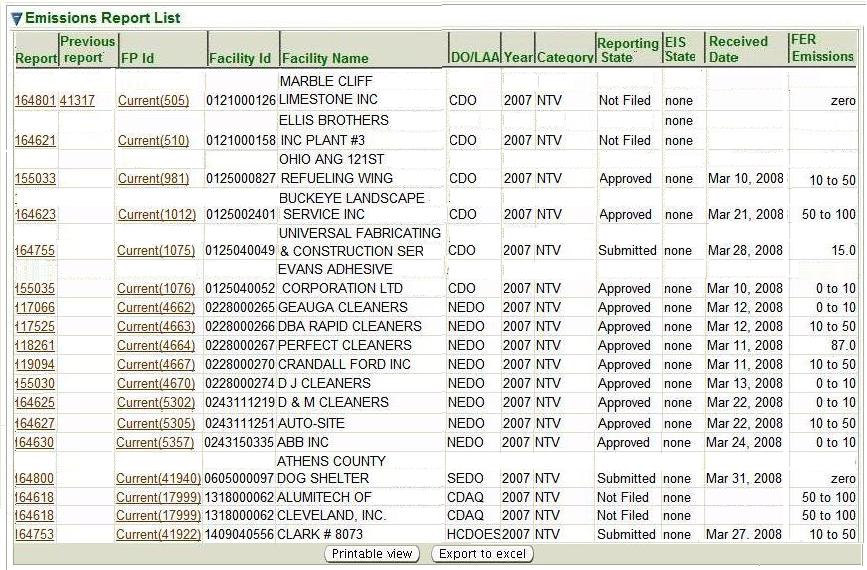

Emissions Inventory Search is the initial page you see when you select the Emissions Inventories tab.
However, you may also get to the Emissions Inventories Search page from the second-level menu on
any page within the Emissions Inventories tab no matter how you reached that page. This is a standard
search page, as described in Common Search Paradigm.
The Search Criteria and Result List for this search are described below.
You may search for an emissions inventory on the basis of any or all of the criteria listed below.
You can
fill in or choose a value for whichever fields you want to use to restrict your search.
Facility ID: Enter a FAC ID or a partial FAC ID
and * or % in any position as a wildcard (example: 012*, %012504, or *0125*, etc.)
to filter for emissions inventories for an
individual facility or group of facilities.
Facility Name: Enter the whole name or a partial name
and * or % in any position as a
wildcard (example: An*, %Anh or *Anh*, etc.) to filter for emissions inventories for an
individual facility or group of facilities.
DO/LAA: Select from a pick list
District Offices and Local Area Agencies to search
Emissions Inventories for facilities serviced by
that office.
Year: Select from a pick list that allows you to search
individual report year.
Reporting Category: Select from a pick list that
allows you to restric your search to the following reporting categories:
Title V,
Synthetic Minor Title V, or
Non-Title V.
Reporting State:
Select from a pick list that allows you to search
the state that the report is in, for example
Submitted, or
Revision Requested.
Emissions Inventory Dates: Filters for emissions inventories received between a range of dates,
from
From Received Date to
To Received Date, by entering
a date in
[m]m/[d]d/[yy]yy format or by selecting a date
from the
provided next to the field.
Emissions: This is a radio button which allows
you ability to enhance your search further based on the level of
pollutant(s) identified in an emissions inventory. By default it is
set to Any, which means all ranges
of emissions levels will be retrieved. The following additional
enhancements are available:
Amount:: Selecting this radio button
will present two additional fields: Range and
Pollutant. You will enter a
Range of emissions levels and identify
via the pick list whether the emissions are in TONS
or LBS. Then select from a pick list the type of
Pollutant
Fee Description: For this search to work
properly, you must identify at least a Year and
Reporting Category. When you select the Fee Description radio button,
the system will present an additional field, Fee Description.
This is a pick list based on the amount of emissions for which fees are paid that can
vary depending on the type of Reporting Category selected.
By default, the search criteria are specified to select all emissions inventories.
You may of course modify these values before you submit your search. The more criteria
you are able to specify, the more precise your search will be. Broad searches can retrieve
many records that can make it difficult to home in on the information you are really looking for.
If, for example, you submit a search with only the default criteria set, you will
get a record for every emissions inventory available for every facility
in the entire State of Ohio which has a relationship with the Ohio EPA
Division of Air Pollution Control. There are approximately 162,753 of them! So, you should try to narrow your search by
specifying as many criteria as you can to identify the
emissions inventories you are really looking for.
After you complete the criteria for the search you want, and click on
,
the system searches all of the records for all the emissions inventories stored in its
database, selects
the ones that meet ALL of the criteria you have specified, and returns
summary information
about those emissions inventories in a datagrid. The datagrid below is the result of a search submitted
with search criteria specified to select all Non-Title V reports for 2007,
regardless of their Reporting State.

Emissions Inventories Search Results Datagrid
The summary data returned includes columns providing
Report,
Previous report,
Facility History ID,
Facility Id,
Facility Name,
DO/LAA,
Year,
Category,
Reporting State,
Received Date and
Emissions.
for all the emissions Inventories that match your search criteria. The following summary data is
further explained:
Report:
This is an ID number that was assigned to the individual emissions inventory upon submittal.
Previous report: Report Id(s) of reports submitted
for the same year, indicating that the original report(s) has been revised.
FP Id - Facility Detail ID: The ID number
displayed correlates to the version of the Facility Detail
associated with the emissions inventory. Clicking on this hyperlink takes you to the identified
Facility Detail. A complete list of Facility Detail versions can be accessed by clicking the
Facility Inventory History link in the third level menu, when viewing
any Facility Detail.
Emissions: The total chargeable tonnage
(pollutant tonnage invoiced for that emissions inventory) is displayed for Title V and
specific reported pollutant tonnage range for SMTV facilities. (Note: Actual
pollutants invoiced for any year is set by AQD ADMIN role only for that year.)
For non-Title V facilities the invoiced emissions range or tons (if over 50 TPY)
is displayed.
Category: The fee reporting category associated with the facility
for that emissions inventory.
Note that the
data in the Report, Previous report and
FP Id
columns in the datagrid are hyperlinks. If you click on any of the
Report, Previous report or
FP Id links in the datagrid, the system will take you to the
Emissions Inventory (current or previous) or the
version of the Facility Detail for the
Report, Previous report or
FP Id
that the link you selected references.
 provided next to the field.
provided next to the field.
 ,
the system searches all of the records for all the emissions inventories stored in its
database, selects
the ones that meet ALL of the criteria you have specified, and returns
summary information
about those emissions inventories in a datagrid. The datagrid below is the result of a search submitted
with search criteria specified to select all Non-Title V reports for 2007,
regardless of their Reporting State.
,
the system searches all of the records for all the emissions inventories stored in its
database, selects
the ones that meet ALL of the criteria you have specified, and returns
summary information
about those emissions inventories in a datagrid. The datagrid below is the result of a search submitted
with search criteria specified to select all Non-Title V reports for 2007,
regardless of their Reporting State.